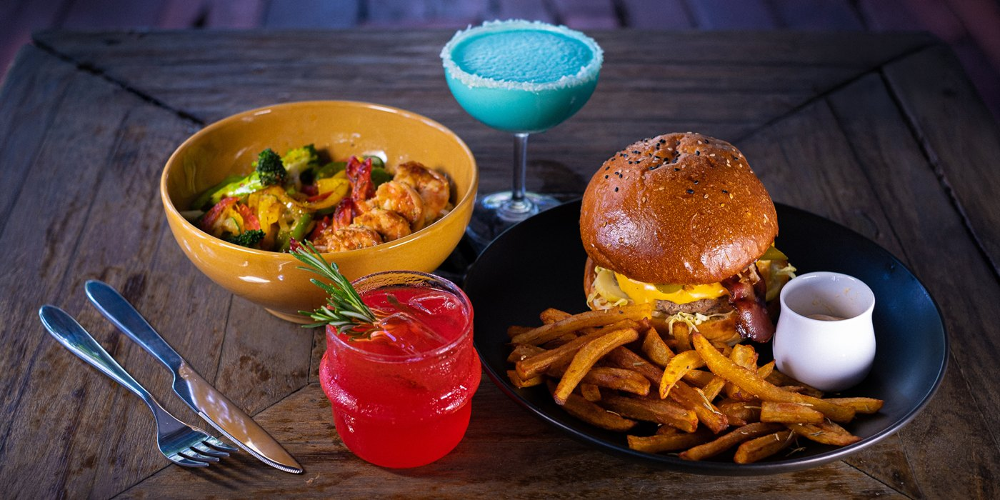
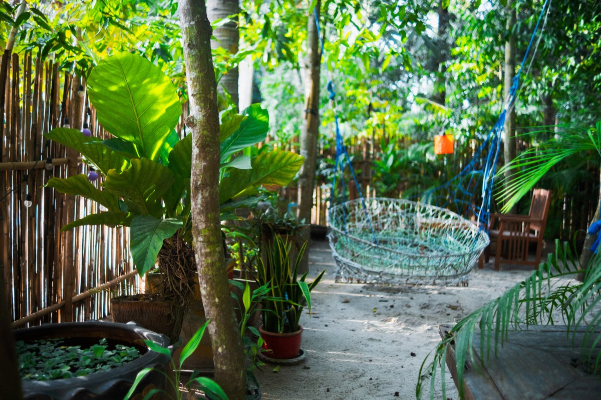
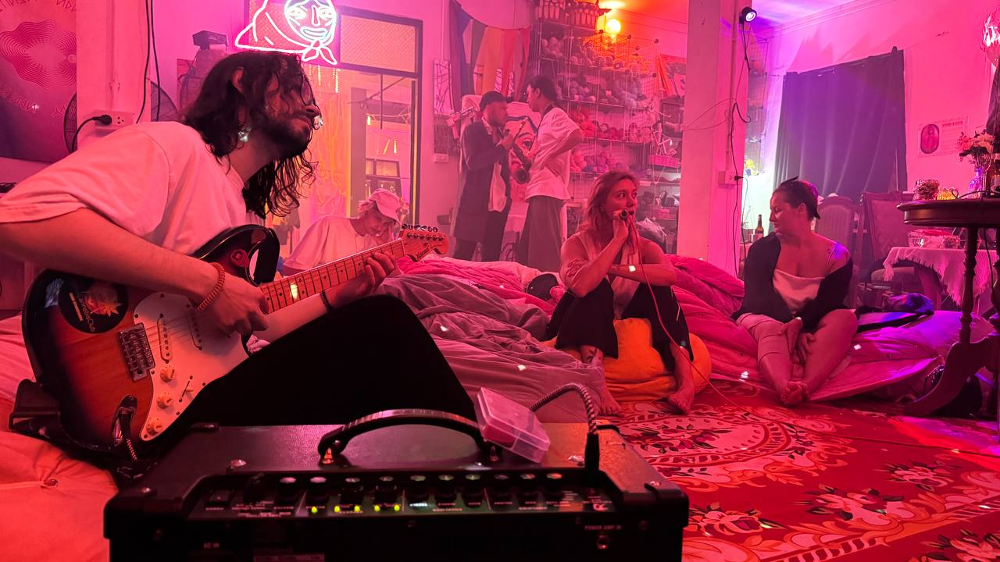

MESTO · Koh Phangan
Come for dinner.
Stay for the evening.
Good food, cocktails, and a garden full of little discoveries. Spend an evening at our artist-run restaurant, bar, and cultural space near Thong Sala.


A little room to wander
Take the evening outside.
Find a table under the trees. Settle into a swing. Explore the hand-woven rope park, built together with our guests.
Come with friends, bring someone new, or enjoy a little time to yourself. There is more to MESTO than the table you sit at.
Meet MESTO and the people behind it ↗
More reasons to stay
Some nights have a soundtrack.
Live music, open mics, exhibitions, workshops, and cinema nights bring the island’s creative community together here.
The programme changes throughout the week. Have a look at what is coming up and make a night of it.
See upcoming eventsSee you at MESTO
Your evening starts here.
Find us in Don Sai, about one minute from Makro in Thong Sala.
Open every day, 4 PM–11:30 PM.